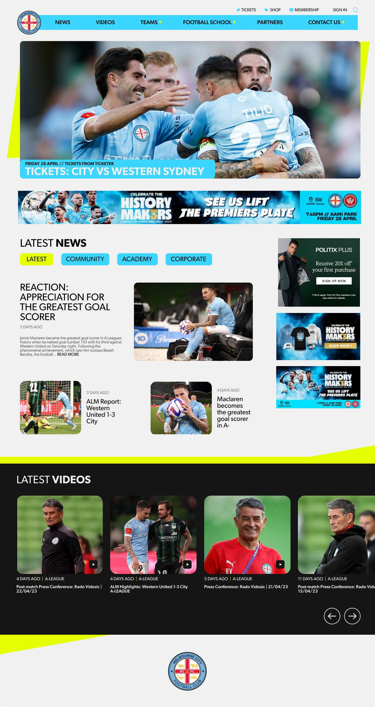
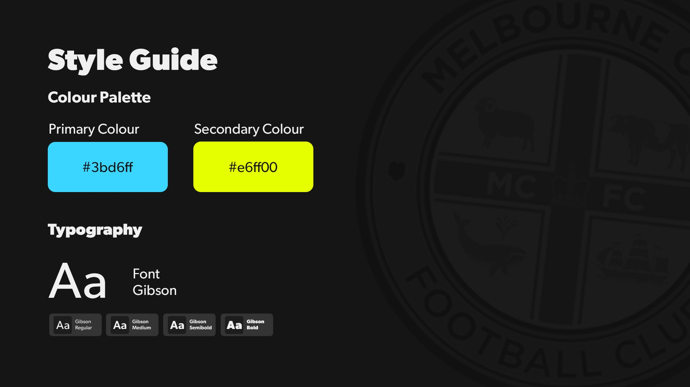
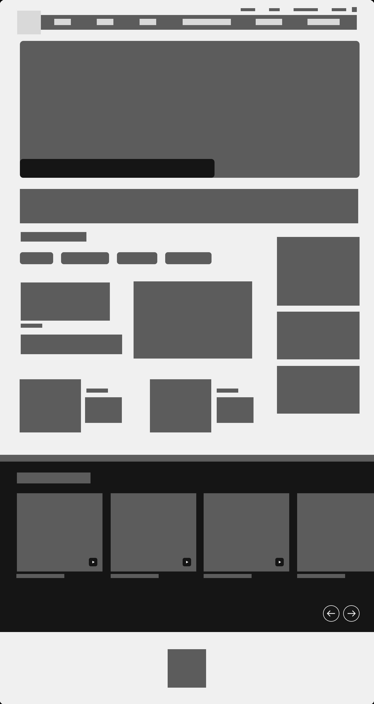

07 / UX case study.
A redesign of the Melbourne City FC website, taken from user research and a persona through to wireframes and a final design. The aim: get fans to fixtures, memberships and news in as few clicks as possible.
UX research · Wireframing · UI design
The finished homepage first. Scroll inside the monitor to browse it the way a fan would, then see how it got there.

The existing site's layout and content structure made essential information hard to find. Fans were complaining they couldn't locate fixtures, memberships or news.
Reorganise the layout and content so the essentials are always in easy reach, answering those complaints and making the site work harder for the club.
Lost fans
Fixtures, memberships and news were buried in a confusing layout.
Low engagement
Poor usability stopped fans exploring further into the club's content.
Ongoing complaints
Steady negative feedback was putting the club's reputation at risk.
Club goals held back
Memberships, news and fan engagement were all underperforming online.
32, electrician, Melbourne. A lifelong member who isn't tech-savvy and is short on time. He just wants the latest news, his membership benefits and when City are playing.
Goals
Frustrations

Move your cursor over the wireframe to see the final design through the lens.Tap the wireframe to flip it to the final design.
